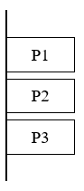
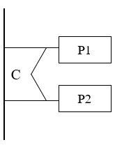
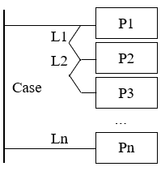
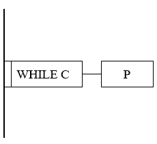
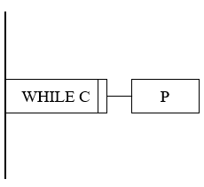
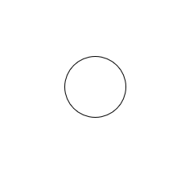
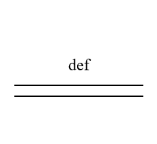
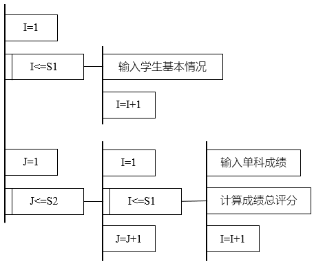

- 问题分析图 PAD - Problem Analysis Diagram
- 日本日立公司于1973年提出
- 为常用高级程序设计语言的各种 控制语句 都提供了对应的图形符号
- 将 PAD 图转换为对应的高级语言程序非常容易
- 特点 Features
- 执行顺序：自上而下、自左向右
- 设计过程：结构化的程序结构
- 结构清晰、层次分明
- 既可表示程序逻辑，也可用于描绘数据结构
- 用 def 逐步详细描述，可支持自顶向下、逐步求精的设计方法
- 基本符号 Symbols
1. 顺序结构

顺序结构
2. 分支结构

IF-ELSE-THEN

SWITCH-CASE
3. 循环结构

WHILE-DO

DO-WHILE
4. 标号

标号
5. 定义

定义
例 2-2 学生成绩管理系统
- 在一个学期中，每名学生学若干门课程，每位教师教若干门课程
- 学生考试成绩合格后可以根据该课程的学时数获得相应的学分
- 学生属于某系、年级，有学号和姓名等
- 教师有工号、姓名、职称、职务等
- S1 是班级学生人数
- S2 是课程数
- 每门课程都要输入全班每位学生：
平时成绩
考试成绩
成绩总评分
- 循环1：录入学生基本情况
- 嵌套循环：外层循环课程，内层循环学生录入成绩

学生成绩管理系统 PAD 图